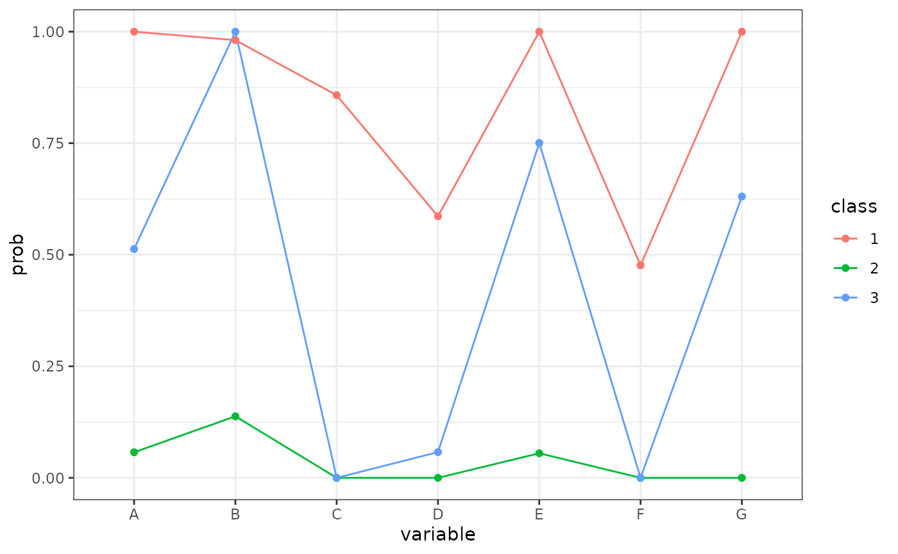

こわくない潜在クラス
easyLCA.Rmdはじめに
Rで潜在クラスをするときにはいろいろ選択肢があるが、個人的にはpoLCAパッケージを使うことが多い。
ここでは、poLCAをより簡単に使えるようにした自作関数などを用いながら、潜在クラス分析のやり方を簡単に解説する。
前準備
-
kamakenパッケージをロードする -
poLCAパッケージのcarcinomaデータを使用する- 子宮頚部に癌腫が存在するか否かについて、118患者に対する7人の病理学者の診断結果
- 1であれば陰性、2であれば陽性
- おそらく、絶対に陰性、絶対に陽性、判断が微妙みたいなクラスが出てきそう
- 顕在変数のカテゴリは1以上の整数にしておく必要があるので、適宜変換する
library(tidyverse)
library(kamaken)
data('carcinoma', package = 'poLCA')
carcinoma |>
count(A, B, C, D, E, F, G) #> A B C D E F G n
#> 1 1 1 1 1 1 1 1 34
#> 2 1 1 1 1 2 1 1 2
#> 3 1 2 1 1 1 1 1 6
#> 4 1 2 1 1 1 1 2 1
#> 5 1 2 1 1 2 1 1 4
#> 6 1 2 1 1 2 1 2 5
#> 7 2 1 1 1 1 1 1 2
#> 8 2 1 2 1 2 1 2 1
#> 9 2 2 1 1 1 1 1 2
#> 10 2 2 1 1 1 1 2 1
#> 11 2 2 1 1 2 1 1 2
#> 12 2 2 1 1 2 1 2 7
#> 13 2 2 1 1 2 2 2 1
#> 14 2 2 1 2 1 1 2 1
#> 15 2 2 1 2 2 1 2 2
#> 16 2 2 1 2 2 2 2 3
#> 17 2 2 2 1 2 1 2 13
#> 18 2 2 2 1 2 2 2 5
#> 19 2 2 2 2 2 1 2 10
#> 20 2 2 2 2 2 2 2 16潜在クラス分析の実行
formulaの書き方
poLCA関数に渡すformulaは書き方に慣れが必要
基本的にはモデルに投入する変数を選択→ matrixに変換→ ~ 1と最後に書く
また，~ 1の1の代わりに，共変量（例えばデータセット内に存在する年齢とかの変数）を書けば，多項ロジット潜在クラス分析になる
formula <- as.matrix(carcinoma) ~ 1推定
クラス数を2から4まで変化させながら潜在クラスを推定
- nclass：クラス数を指定
- maxiter：最大対数尤度を求める反復計算を最大何回行うかを表し、この回数を超えても解が収束しない場合、エラーが出る
- nrep：局所解の問題に対処するために、何回モデルを回すかを表し、この回数分初期値を変えながら潜在クラスの推定を行うことができる
- verbose：推定の詳細を表示するかどうか。有用なエラーを見逃す可能性があるので基本的にはTRUEにする
result <- poLCA_result(
formula = formula,
data = carcinoma,
nclass = 2:4,
maxiter = 6000,
nrep = 5,
verbose = FALSE
)結果の確認
モデル選択
kamaken::poLCA_BLRTを使用する
- AICやBICを参考にクラス数を決定（値が小さいほど当てはまりの良いモデルとされる）
- AIC、BICともに3クラスで最も小さくなっているので、3クラスを採用
poLCA_BLRT(result)#> # A tibble: 3 × 7
#> model.no model df.residual logLik AIC BIC g.squared
#> <int> <list> <dbl> <dbl> <dbl> <dbl> <dbl>
#> 1 2 <poLCA> 103 -317. 665. 706. 62.4
#> 2 3 <poLCA> 95 -294. 633. 697. 15.3
#> 3 4 <poLCA> 87 -289. 641. 726. 6.42クラスの特徴の把握
kamaken::poLCA_check_classを使用する
3クラスの場合の結果を確認
- クラス1はDとF以外から陽性と判断されている
- クラス2はほぼ全員から陰性と判断されている
- クラス3は判断する人によって結果がかなり異なる
だいたい冒頭の読み通りな気がする。
poLCA_check_class(result, nclass = 3) |>
# 表示桁数を3桁にする
mutate(across(`1`:`3`, \(x) sprintf('%.3f', x)))#> # A tibble: 15 × 5
#> variable outcome `1` `2` `3`
#> <chr> <dbl> <chr> <chr> <chr>
#> 1 クラス構成割合 NA 0.445 0.374 0.182
#> 2 A 1 0.000 0.943 0.487
#> 3 A 2 1.000 0.057 0.513
#> 4 B 1 0.019 0.862 0.000
#> 5 B 2 0.981 0.138 1.000
#> 6 C 1 0.142 1.000 1.000
#> 7 C 2 0.858 0.000 0.000
#> 8 D 1 0.414 1.000 0.942
#> 9 D 2 0.586 0.000 0.058
#> 10 E 1 0.000 0.945 0.249
#> 11 E 2 1.000 0.055 0.751
#> 12 F 1 0.524 1.000 1.000
#> 13 F 2 0.476 0.000 0.000
#> 14 G 1 0.000 1.000 0.369
#> 15 G 2 1.000 0.000 0.631- 2値変数の場合、こんな感じの図も役にたつ
poLCA_check_class(result, nclass = 3) |>
# 2：陽性の応答確率のみを抽出
filter(outcome == 2) |>
# 縦持ちにする
pivot_longer(
cols = !c(variable, outcome),
names_to = 'class',
values_to = 'prob'
) |>
ggplot(aes(variable, prob, color = class, group = class))+
geom_line()+
geom_point()+
theme_bw()